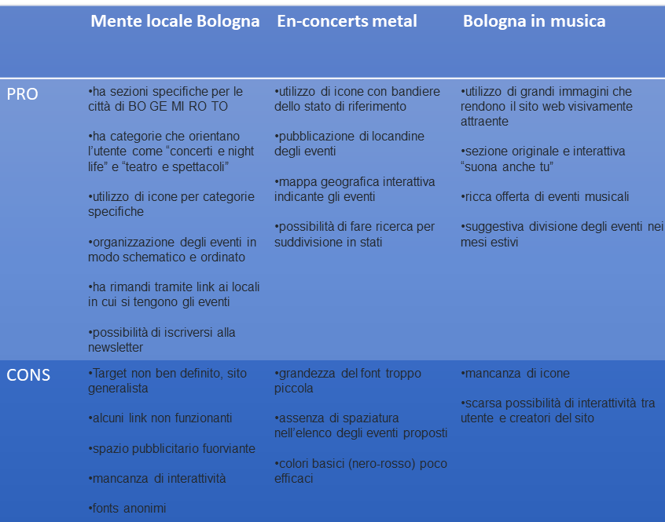
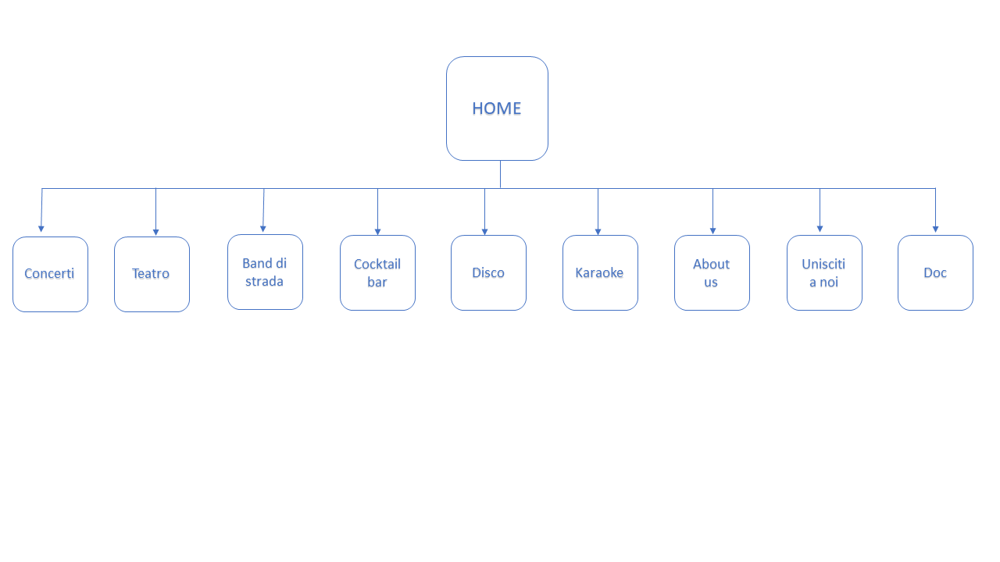
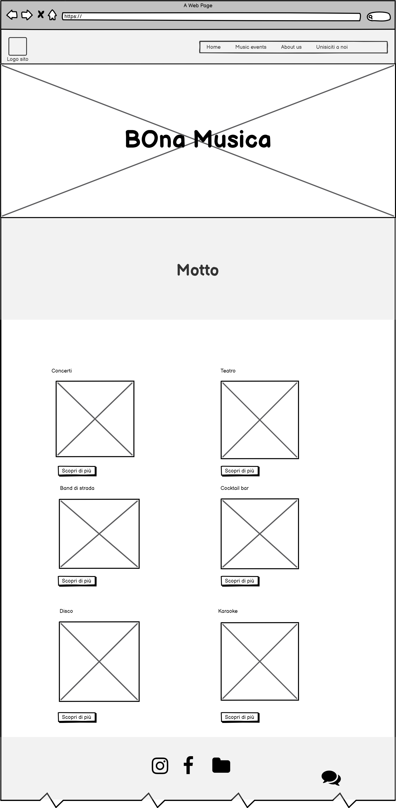
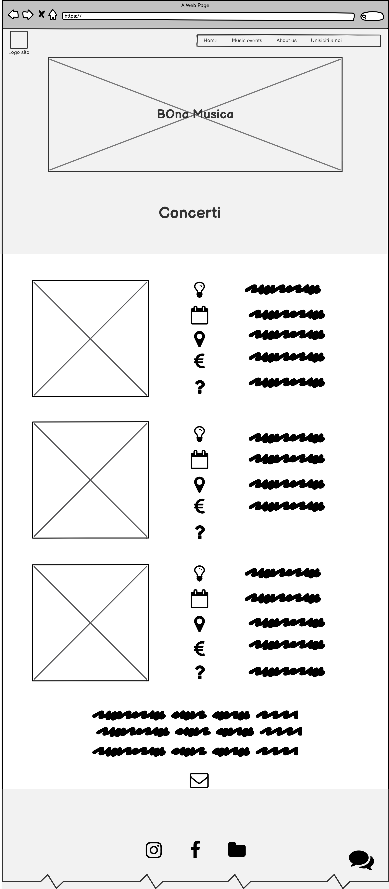
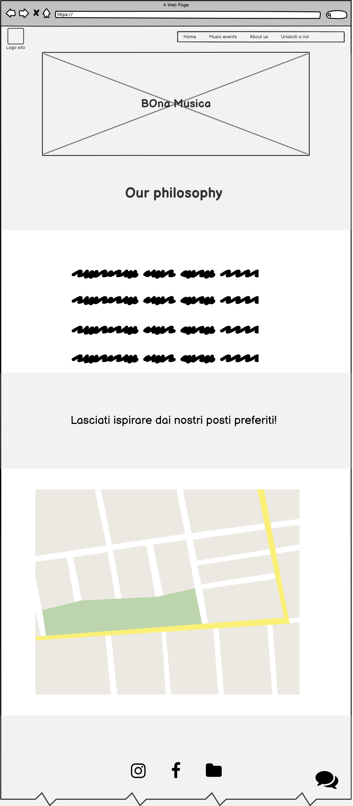

Abstract
BOna Musica è un sito che vuole informare in modo esaustivo sugli eventi musicali offerti dalla città di Bologna, investendo sull’interazione diretta con gli utenti da una parte e con i promotori di eventi dall’altra. Questo sito permette di spaziare dalla musica in voga a quella di nicchia. E’ principalmente rivolto a giovani studenti fuorisede che desiderano ampliare il ventaglio di proposte musicali nei diversi angoli della città. Inoltre, BOna Musica aiuta l’utente non solo a compiere la scelta migliore in base ai propri gusti musicali, ma cerca anche di toccare corde inesplorate per aprire l’utente all’ignoto.
Project Management Plan
Benchmarking
Obiettivi
Questo sito si pone due obiettivi uguali per importanza: fornire informazioni sulle diverse tipologie di eventi musicali a Bologna e orientare gli utenti nella scoperta di come occupare il tempo libero, sempre a ritmo di BOna Musica.
Target utente
Il target utente primario è quello degli studenti universitari fuori sede che meno conoscono l’offerta musicale e ricreativa della città. Ancora, i giovani e studenti nella fascia 20/35 anni
Competitors
Struttura e Layout
Architettura del sito
Wireframe
  Look and feel
Il logo è stato creato con cinema 4d ed è il cuore del sito Il colore arancio #F25D07 richiama i mattoni bolognesi Il colore blu #2450A6 utilizzato per le scritte richiama gli eventi notturni Il color panna #ECEEF0 crea armonia con due colori già vivaci I font utilizzati sono: Chewy per titoli e motto, Roboto Slab per i testi. Le icone hanno l’obiettivo di sostituire il testo in eccesso La spaziatura risalta le diverse sezioni del sito L'interattività del sito è concretizzata con proposta di newsletter, bottoni "scopri di più" e Chatra per commentare
Linguaggi e strumenti
Linguaggi
HTML CSS JAVA SCRIPT
Struttura
"Sublime Text 2" è stato il text editor per la realizzazione del codice di BOna Musica Il template “Freelancer” di Start Bootstrap è stato di ispirazione per la grafica di BOna Musica “Google fonts” ha orientato BOna Musica nella scelta dei fonts più adatti “Cinema 4d” è il programma che BOna Musica ha utilizzato per la creazione del logo “Google image” e “Flickr” sono stati utilizzati per la ricerca delle immagini “Imagecolorpirker.com” per la scelta e l’abbinamento dei colori “My google maps” è il servizio che ha consentito la creazione della mappa dei luoghi preferiti di BOna Musica “Chatra” è sito che permette a BOna Musica di interagire con i propri utenti "Balsamiq" è il programma utilizzato per la realizzazione del Wireframe "W3Schools" è il sito che ha assistito la progettazione di BOna Musica "Font Awesome" e “Google images” e “flaticon” per la scelta di icone di BOna musica "Github" è il servizio di hosting che ha permesso a BOna Musica di essere on-line
Communication Strategy
Background
Il web propone una vasta gamma di siti che pubblicizzano eventi musicali in differenti categorie: dai generalisti a quelli suddivisi per genere musicale, dai siti internazionali ad altri che analizzano l’offerta in una singola città. Il progetto BOna Musica vuole risaltare i lati positivi di quanto già esiste, offrendo liste di eventi di facile comprensione, con grafica allettante e informazioni precise, per rendere accessibile a colpo d’occhio un ventaglio ricco di proposte in unica realtà, quella bolognese.
Siti simili a BOna Musica sono talvolta confusionari, anonimi, non indirizzati a un target preciso e di discutibile affidabilità. Più di tutti, sembra carente l’aspetto dell’interattività con gli utenti. Offrire diversi canali di interfaccia sia ai fruitori sia ai promotori degli eventi, è invece indice di usabilità, chiarezza e desiderio di miglioramento, dalla ricerca delle proposte musicali fino alla loro pubblicizzazione.
Obiettivi comunicativi
Per realizzare i principali obiettivi, il progetto si è concentrato sui seguenti aspetti: -chiarezza del messaggio, al fine di fornire informazioni -chiarezza stilistica, per una comunicazione efficace -chiarezza grafica, grazie all’ausilio di icone che sostituiscono il testo e catturano l’attenzione
Target audience e messaggio
Il sito è indirizzato principalmente agli studenti universitari fuori sede di Bologna, ma anche agli studenti in generale e ai giovani dai 20 ai 35 anni circa che sono affascinati dall’atmosfera bolognese.
Il target di BOna Musica fa largo uso dei social media, in particolare Instagram, ma si tiene informato anche tramite volantini, manifesti e passaparola.
Bona musica raggiunge i propri gruppi di interesse attraverso la creazione di una pagina instagram personalizzata e la produzione grafica di un logo che le conferisce identità.
Un possibile ostacolo per la diffusione e l'utilizzo di BOna Musica è rappresentato dalla vastità del panorama musicale contemporaneo, promosso da innumerevoli siti web che aumentano la concorrenza.
BOna Musica aiuta gli utenti a scegliere l’evento musicale a loro più adatto e allo stesso tempo suggerisce proposte alternative alle abitudini musicali consolidate.
Promozione
BOna Musica promuove i propri contenuti attraverso l'utilizzo dei social media, in particolare con la creazione di un profilo Facebook e di una pagina Instagram.
Valutazione dei risultati